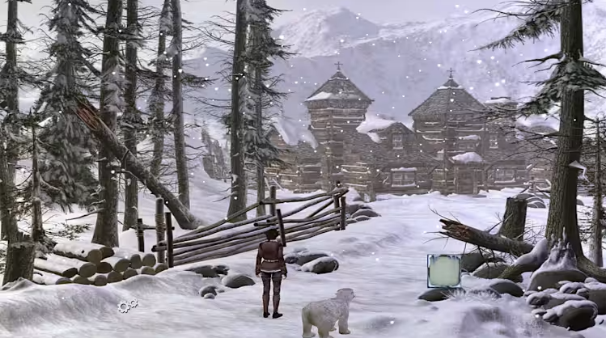
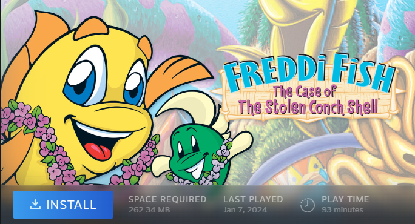

December was the second month of the Retro Games Club, and our theme was “DOSember”. That is, we had to play a game originally released on DOS.
The vote to decide our game was originally very close, with a six-way tie (out of 8 choices). Ultimately, after a final poll, we chose Day of the Tentacle, the sequel to Maniac Mansion, a humorous point and click adventure game.
I've always felt a lot of nostalgia for point and click adventure games, but maybe not for the right reasons.
As a kid, the only real point and click game I had played was Siberia 2, which I remember enjoying a lot. At the time it even made me fall in love with Siberian culture (though probably not the real Siberian culture, I'm sure), which I guess means a lot for the atmosphere of the game.

Of course, I did play other point and click games: the cereal box ones. Freddi Fish 3 was my absolute favourite at the time, and I played it a lot. I even did all the possible runs recently, in January 2024, just for nostalgia's sake.

I did also play more recent titles, like Broken Age and Dropsy, which I guess are now over a decade old… Still, Dropsy made me fall in love with the genre all over again when I played it back in 2016.
But you'll notice all of these came out after the DOS era. And, despite never living through that time (my first computer was a Windows 98), I still felt a lot of secondhand nostalgia for it.
So, after I'd decided on the DOS theme for December, I was happy we chose Day of the Tentacle as our monthly game.
After we'd decided on playing the game, I realized it wasn't even available on GOG, which is surprised for a DOS game. I tried running it through DOSBox, but never managed to make it work. Eventually, I switched to ScummVM, and it worked like a charm. But, I knew I already owned the remastered version of the game on Steam through an old Humble Bundle, so all that work was for the other people of the club.
I relayed the information on how to play the game via ScummVM on Discord, but also mentioned the remaster was available on Steam for $3 during their Black Friday sale.
In the end, we all just ended up playing it on Steam, for the simplicity, and the quality of life improvements of a more modern, remastered game.
In the remastered version, you can switch between the updated graphics and gameplay and the DOS graphics and gameplay by pressing F1, at any time, making it a very nice choice to play as intended while still benefitting from more modern controls.
I played the vast majority of the game in DOS mode. I only switched to use some basic quality of life improvements towards the end of the game, to save some time.
This month, the Discord server was a lot more silent. Maybe it was because it was the second month and people were less excited. Or maybe it was because the game was less exciting.
I found the game itself to be fine. I think what came out the most was how outdated the humour felt. It wasn't offensive necessarily, but you could tell it was early 90’s trying to be funny. Sometimes it worked. Oftentimes it didn't.
But that's just the tone of the game. A point and click adventure game is, after all, mostly about the puzzles.
Apart from me, most of the group wasn’t super familiar or fond of point and click adventure games (apart from one new person who joined in the last week). And while I think most of the puzzles in Day Of The Tentacle were logical, some were a bit too esoteric for my or everyone else's taste. The game even acknowledges this, sometimes.
I'm happy I didn't have to resort to randomly clicking on everything on the screen though. There was effectively no pixel hunting. But, I still managed to get stuck, in a dumb way.
Early in the game, you encounter an…infamous hamster. I saw it, noted it in my brain, and moved on. Later in the game, I figured out I needed the hamster for one of the puzzles. I had effectively figured out the whole puzzle, but I was missing how to get the hamster. I checked online in walkthroughs, looking up how to get the hamster, thinking I was missing a key piece of the puzzle, likely some bait to get the hamster to come to me, but nothing online helped me. That's when I figured out I could just select "Pick Up", and then click on the hamster. That simple.
This was mostly a me thing though, and nowhere close to pixel hunting. I guess I just didn't think to try and grab it, or I tried and clicked next to it instead when I initially saw it.
Day of the Tentacle is a good though outdated game that I'm glad I finished, though I probably will never play it again. It didn't make me love point and click adventure games more, but it did make me want to visit more recent entries instead of playing the old classics.
I'm a bit sad that the game didn't catch the attention of the rest of the group nearly as much, especially since I definitely liked it better than Advance Wars.
Next month, we'll be playing the original Spyro on PlayStation. I already own a physical copy of the game, which I'll be playing on my CRT TV setup I have at home. I'm probably more excited to play on my CRT than I am to play the game. Still, people already seem to be more excited about it, so I'm hoping to get some nice discussions going.